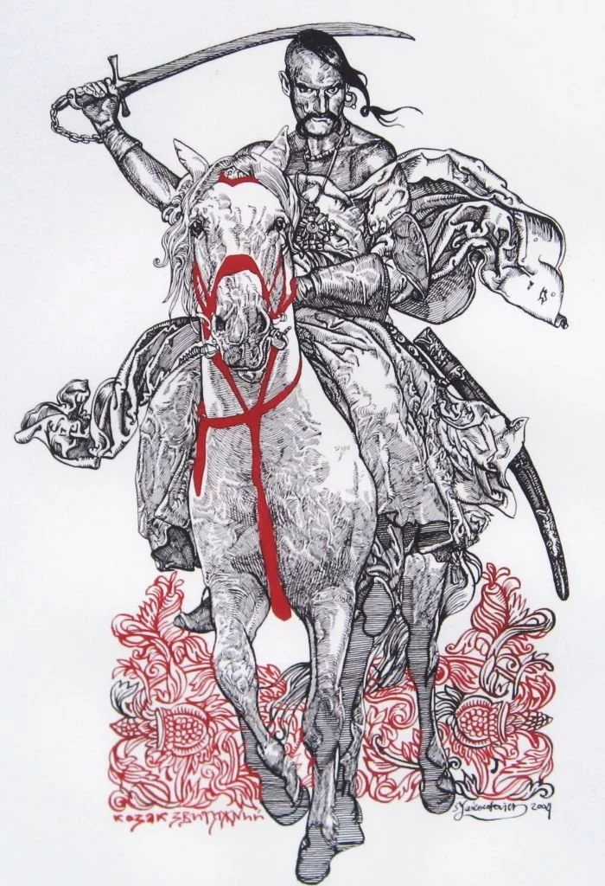
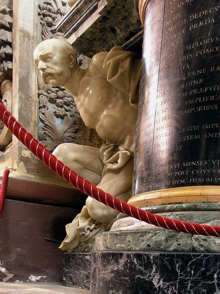
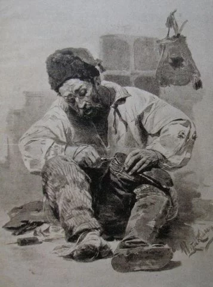
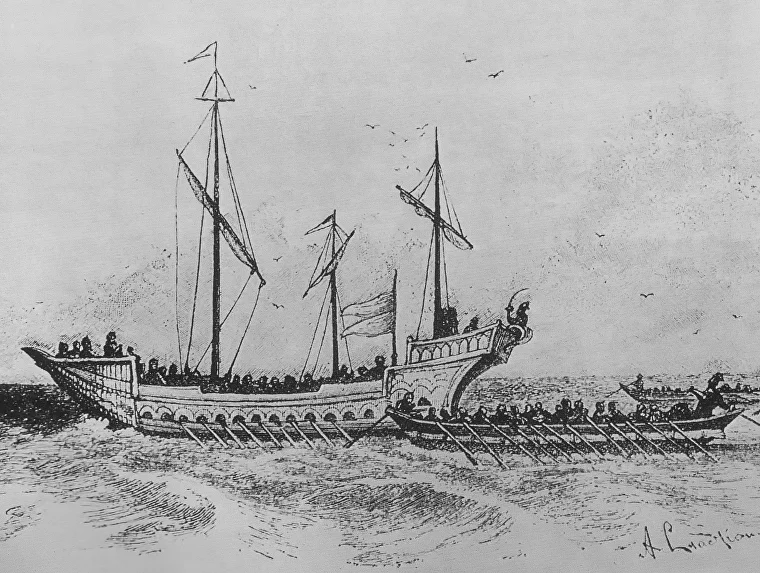
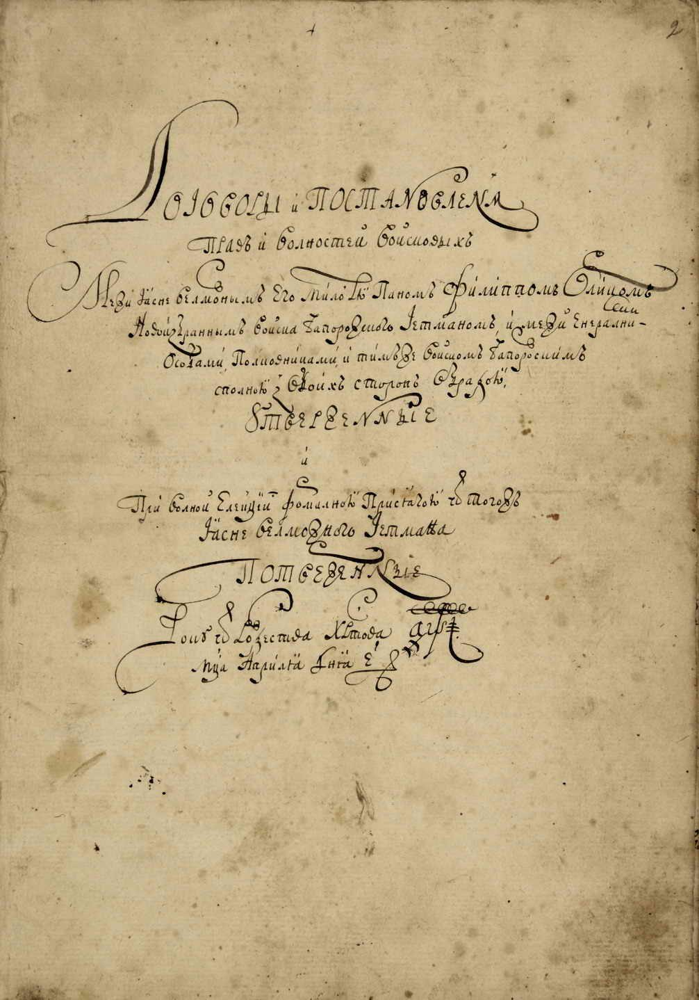
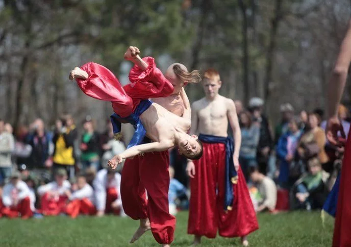

Носили "оселедця", щоб Бог за чуба відніс у рай
Традиційній зачісці козаків є досить цікаве пояснення, хоч і ґрунтується воно швидше на легенді, аніж на
історичних фактах. Так, у козаків вважалося, що завдяки "оселедцю" на голові вони можуть потрапити до раю.
Зокрема козаки вірили, що Бог віднесе їх на небо за чуба, коли вони загинуть у бою.
В іншій інтерпретації – мертвого козака за волосся мав ухопити янгол і віднести у райське місце.
Згідно зі ще однією легендою, всі козаки вважалися доволі грішними, тому думали, що потраплять до пекла. А там
уже, сподівалися воїни, Бог змилується, схопить їх за чуба і витягне звідти.

Хоча насправді, згідно з історичними даними, довге пасмо волосся у козаків означало зовсім інше. Так, у
стародавніх слов'ян не було жодного божества з довгим волоссям чи бородою, отже, такий зовнішній вигляд
вважався божественним.
Носити «оселедця», до речі, мав право тільки той, хто пройшов усі випробування і був посвячений у козаки.
Носили таку зачіску не абияк, а за певними правилами.
Одним із найганебніших покарань у козаків було саме відрізання "оселедця".
2019 Всі права застережено
Йшли у похід із правої ноги
Козаки завжди вирушали у похід тільки з правої ноги. Таким чином вони засвідчували, що йдуть на "правеє діло".
Як зазначено у дослідженні А. Бондарчука "Маловідомі козацькі звичаї", супроводжувався цей ритуал вигукуванням з
наростанням сили голосу:"Юр-Юр-Юр".Так козаки віддавали шану Святому Юрію.
Згодом цей вигук переродився на традиційне "Ура!".

Кожен воїн мав ще й власні обереги, про які розповідає український фольклор. Найпоширеніші серед них – хустка,
вишитий рушник, хрест або жменька рідної землі – на випадок, якщо доведеться вмерти на чужині.
Гаслом справжнього лицаря був вислів: "За волю, за долю, за любов!".
2019 Всі права застережено
Майже не носили шаровари, бо це не їхній традиційний одяг
Сучасний образ козака у вишиванці і червоних шароварах давно уже розвінчаний істориками. До прикладу, саме цей
нюанс пояснюється у документальному фільмі "Скарби нації" із циклу "Україна", який вийшов на екрани у 2019 році
на телеканалі "1+1".
Так, зазначається, що козаки носили шаровари лише впродовж короткого відтинку часу, коли підпорядковувалися
Росії.
"Усі думають, що козаки ходили у червоних шароварах та вишиванках. Але весь цей стандарт був створений
українським
театром кінця ХІХ – початку XX століття. Це були стилізовані речі під образи, знайомі людям. Але козаки
Хмельницького у шароварах не ходили. Їхні штани були схожі на ті вузькі джинси, у яких ходять сучасні підлітки",
– пояснив сучасний історик Кирило Галушко.

Насправді ж козаки були ще тими модниками. За доби Богдана Хмельницького чоловіки носили кальсони – тобто
вузькі
штани. Причому згадки про цей предмет одягу є в описах французького інженера Гійома де Боплана, який подорожував
Україною у середині XVII століття.
Щоправда, у радянські часи перекладачі його робіт "перевдягнули" козаків у шаровари, тому зараз українці
уявляють їх саме у такому одязі.
Побудували диво-човни і першими здійснили "морський десант"
Чи не найбільша гордість козаків – це човен, який звався "чайка". Збудував його гетьман із Канева Самійло
Кішка.
Саме його називають батьком-засновником українського морського флоту.
"Чайки", за свідченнями істориків, були 20 метрів завдовжки і 4 метри завширшки. Вони вміщували 50-70 озброєних
козаків. При цьому на борту також були встановлені 5 грамат. У кожного лицаря з собою було по дві рушниці.

Цікаво, що "чайки" були досить маневровими, суто військовими човнами, виготовленими з дубової дошки і
розпиляного уздовж стовбура. Вони не боялися шторму чи негоди. Для того, щоб розвернутися, козаки могли просто
пересісти і веслувати у зворотному напрямку.
Корма і ніс у "чайки" були однаково гострі.
Були першими антикорупціонерами в Україні
Знаменита "Конституція Пилипа Орлика" 1710 року закладала підвалини антикорупційного законодавства, які і нині
використовуються в сучасному українському суспільстві.
Так, вона виключала узурпацію влади. Наприклад, документ передбачав, що військові старшини мають бути обрані
вільним голосуванням, що гетьман не має права самовладно привласнювати те, що належить громаді, не має права
розділяти громадське майно між іншими людьми.

У Конституції наголошувалося, що ніхто не може зловживати місцевими бюджетами, а якщо буде впійманий на
розтратах
– має відшкодувати кошти із власної кишені.
Не танцювали гопака, бо це – бойове мистецтво
Гопак для козаків був далеко не танцями під народну музику. Як свідчать історичні дані, спочатку ці рухи
утворювали окреме бойове мистецтво, дещо схоже на капоейру у Бразилії.
Цю теорію зараз активно розвиває український дослідник та знавець бойових мистецтв Володимир Пилат.

Техніка гопака була дуже різноманітною. Маленьких хлопчиків від самого дитинства навчали її виконанню. Цікаво,
що при цьому жінкам було заборонено відтворювати гопак.
Гопак також став і способом бойової підготовки на Січі. Козаки цілими днями відточували свою майстерність. Та
згодом плавні рухи почали ставати ритмічними, а після знищення Січі взагалі перетворилися на український
народний танець, який зараз часто виконують на сценах.
Зустрівшись із ворогом, не вступали у бій, а сміялися з нього
Не тільки бойова майстерність, але також і кмітливість та хитрість допомагали козакам
здолати ворога. До прикладу, зустрівшись із суперником, українські лицарі ніколи
не вступали у бій. Вони використовували будь-які викрути для того, аби краще роздивитися ворожий стан та
навести ворогів на свій табір.
Одним із таких прийомів був виклик ворога на герць: найхоробріші козаки пропонували ворожим звитяжцям побитися
сам на сам.

Якщо ж вороги вагалися, козаки починали їх висміювати та ганьбити, чим викликали неабияку злість у суперників.
Після цього розлючені вороги кидалися на козацький табір, а тут їх щедро вітали такою "залізною квасолею"
(кулями), що все поле навкруги козацького табору вкривалося ворожим трупом.
Козацька сила, мужність і жага до свободи досі передається із покоління у покоління, бо українська вдача – поза
часом і простором.
Як стати справжнім козаком: 10 золотих правил
- Козак знімає шапку тільки перед Богом та перед собою – і то за власним бажанням
- Де козак, там і слава
- Зроду-віку козак не був і не буде катом!
- Б'ють – роїсь, наваливсь – лавою вбийсь, лихо вкляч, а все одно оддяч!
- Назвався хоробрим – виходь на бойовисько
- Не той сильний, що камінь верже, а той, що в собі серце держе
- Сам загибай, а братчика виручай
- Терпи, хлопче – козаком будеш, а з козака – в отамани попадеш
- Чия відвага – того і перевага
- Упіймав – не упіймав, а погнатись можна